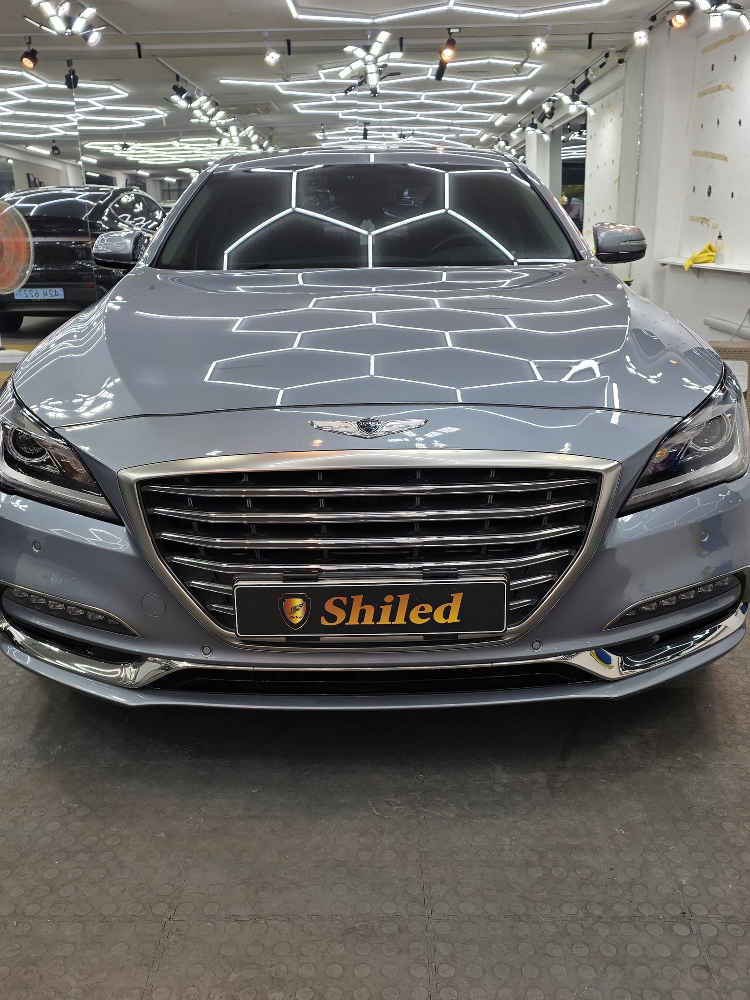
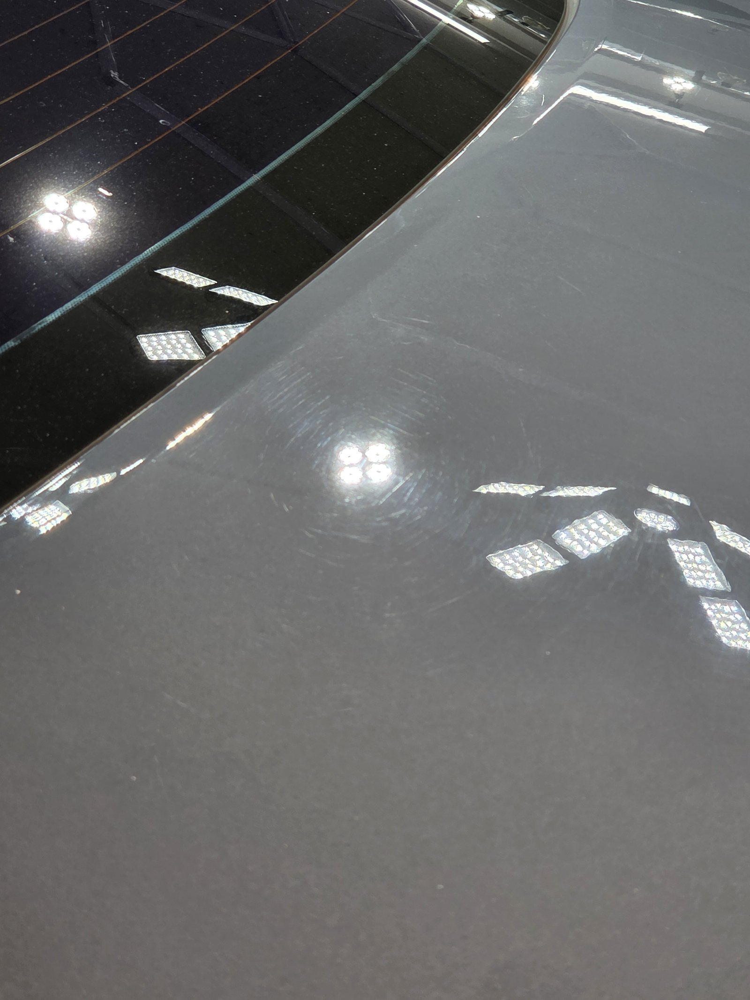
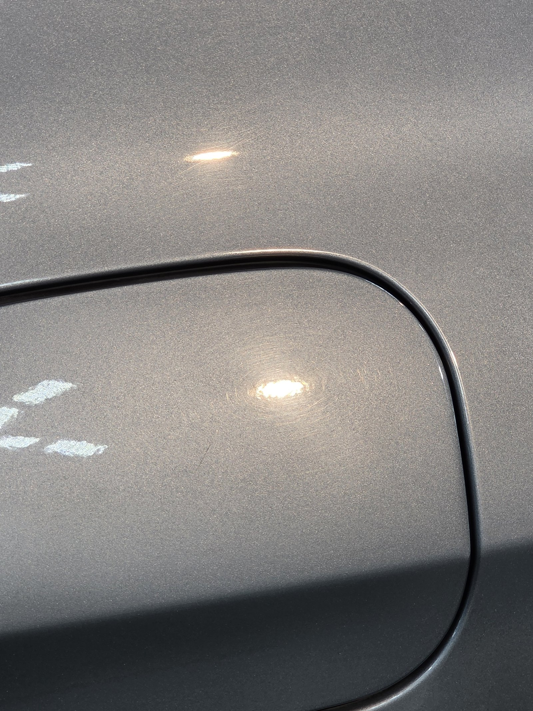
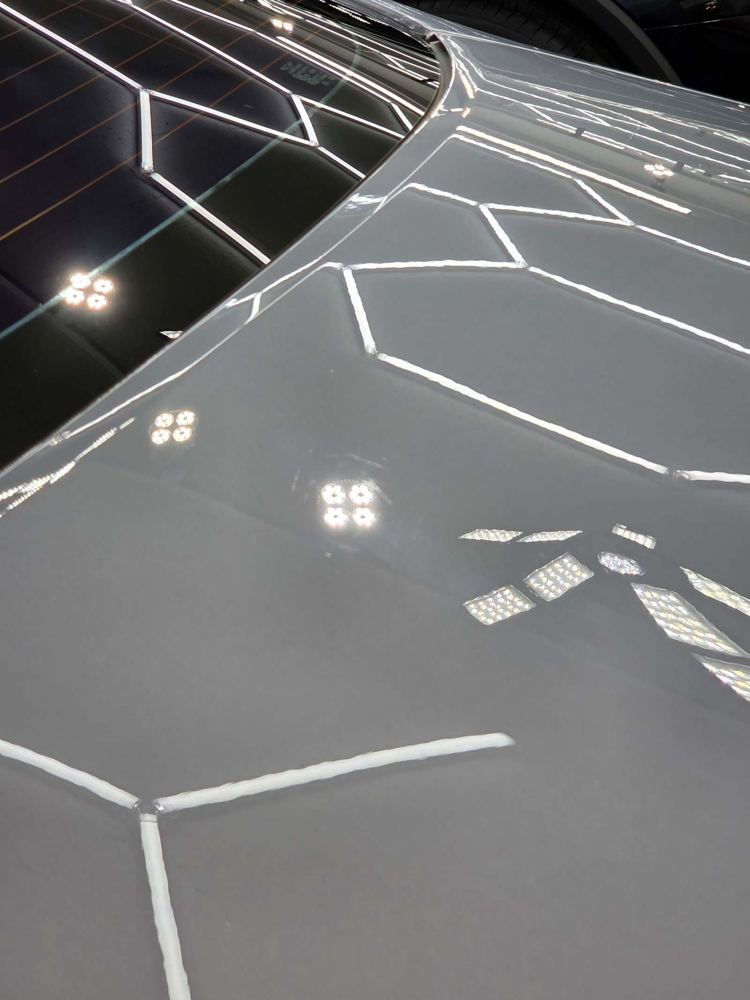
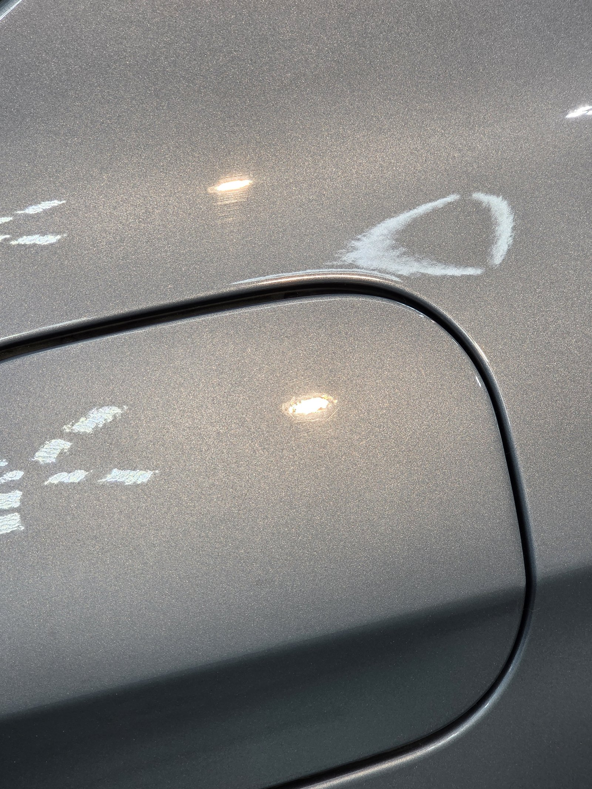
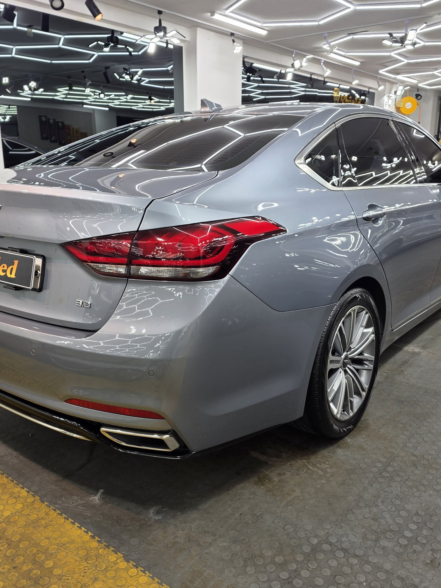
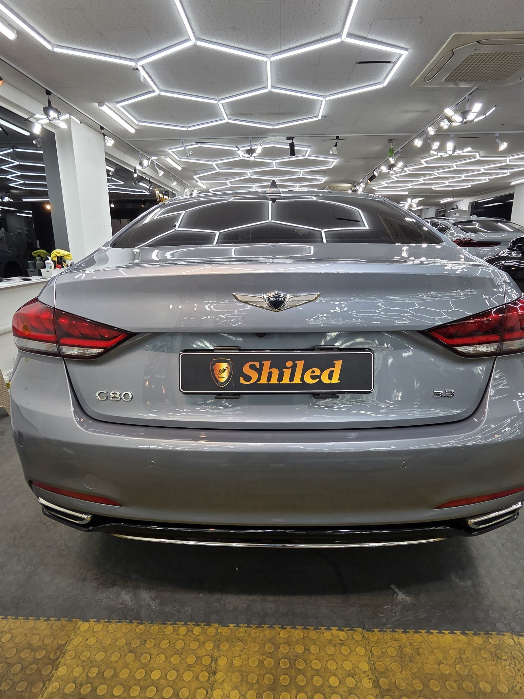
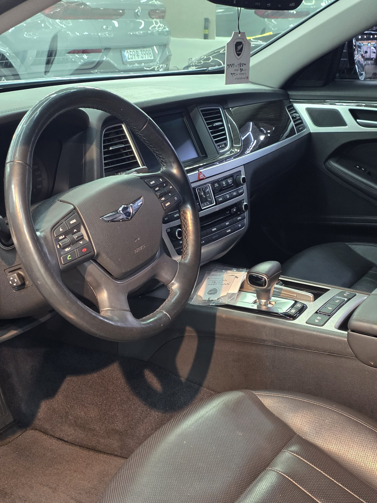
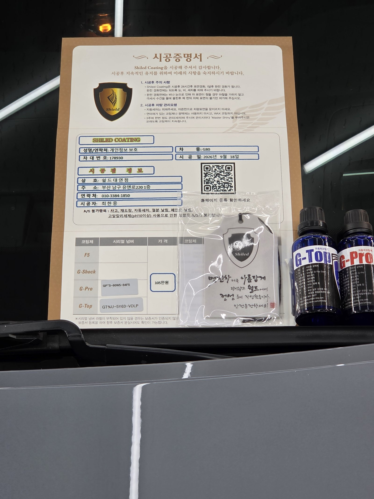

제네시스 G80 실버입니다.
차체 전반은 깔끔했지만, 주유구 주변에 자잘한 잔기스가 유독 몰려 있었습니다.

주유구 주변은 왜 잔기스가 몰리나
손과 옷깃, 주유기 노즐이 반복적으로 스치는 자리이기 때문입니다.
실버는 검정보다 잔기스가 상대적으로 덜 도드라지는 색입니다. 그래도 매장 조명처럼 강한 빛 아래 세워두면 얘기가 다릅니다. 체커보드 조명이 도장면에 비치자, 주유구 주변으로 자잘한 원형 자국이 촘촘하게 드러났습니다. 평소 주행 중에는 잘 안 보이다가 이런 자리에서야 발견되는 경우가 많습니다.

작업 전 주유구 주변. 체커보드 조명 아래 자잘한 자국이 겹쳐 보입니다

주유구 도어 테두리를 따라서도 자국이 이어져 있었습니다
부산 광택, 잔기스는 어떤 순서로 잡나
바로 연마부터 들어가지 않습니다.
① 디테일링 세차와 철분 제거로 표면 오염을 먼저 걷어내고,
② 조명으로 잔기스의 밀도와 범위를 부위별로 확인한 뒤,
③ 컴파운드와 폴리싱 패드를 단계별로 바꿔가며 자국을 지웁니다.
주유구 도어처럼 곡면과 라인이 많은 자리는 패드가 닿는 각도를 세심하게 바꿔가며 작업해야 합니다. 평면보다 시간이 더 걸리는 구간입니다.
기술자의 팁
주유구 주변은 면적이 좁고 곡면이 많아 광택기 패드가 온전히 닿기 어려운 자리입니다. 그만큼 손으로 각도를 바꿔가며 여러 번 나눠 작업해야 잔기스가 고르게 지워집니다. 한 번에 밀어붙이면 오히려 주변 도장이 더 깎일 수 있습니다.

같은 자리, 작업 후. 조명 반사가 흐트러짐 없이 맺힙니다
작업 전 사진과 비교하면 차이가 뚜렷합니다.
조명 주변을 겹겹이 둘러싸던 잔기스가 사라지고, 빛이 흩어지지 않고 그대로 되쏘아 옵니다. 도장면이 매끈해졌다는 뜻입니다.

주유구 도어 테두리도 자국 없이 깔끔하게 정리됐습니다
마감은 G-PRO+G-TOP 듀얼코팅으로
잔기스를 지운 도장면은 보호막이 없는 맨살 상태입니다.
여기에 G-PRO와 G-TOP을 함께 올리는 듀얼코팅으로 마무리했습니다. G-PRO가 스크래치 내성이 강한 하드코팅을 잡아주고, G-TOP이 발수·방오막을 더해줍니다. 광택으로 흠집을 지운 직후가 오염에는 오히려 더 취약한 시점이라, 두 제품을 겹쳐 올려 애써 만든 표면을 오래 지키도록 했습니다. 코팅제는 대표가 화학공학 전공으로 직접 개발·제조한 제품입니다.


내부도 함께 정리합니다
외부 도장을 잡는 동안 실내도 같이 관리합니다.
진공과 정리로 인도 전 컨디션까지 맞춰드립니다.

시공증명서를 함께 드립니다
모든 시공 차량에 시공증명서를 드립니다.
차종·시공일·코팅제 시리얼 번호가 적혀 있고, 홈페이지에 등록해 보증을 받으실 수 있습니다. 이 차는 듀얼코팅으로 기록돼 있습니다.

차종·시공일·코팅제 시리얼이 기재된 시공증명서
자주 묻는 질문
Q. 실버 차량도 잔기스가 눈에 잘 띄나요?
A. 검정만큼 두드러지진 않지만, 매장 조명처럼 강한 빛 아래서는 실버도 잔기스가 그대로 드러납니다. 특히 손이 자주 닿는 주유구나 도어 주변은 자잘한 스월이 몰리기 쉬운 자리입니다.
Q. 주유구 주변은 왜 유독 잔기스가 많나요?
A. 주유할 때마다 손이나 옷깃, 주유기 노즐이 스치기 쉬운 자리이기 때문입니다. 반복적으로 스치는 접촉이 쌓이면서 다른 부위보다 자잘한 원형 자국이 먼저 몰리는 경우가 많습니다.
Q. 듀얼코팅은 싱글코팅과 뭐가 다른가요?
A. 듀얼코팅은 G-PRO와 G-TOP을 함께 올리는 조합입니다. G-PRO가 스크래치 내성이 강한 하드코팅을 잡고, G-TOP이 발수·방오막을 더해 관리가 한결 쉬워집니다. 광택으로 흠집을 지운 직후에는 보호막이 없는 상태라, 두 제품을 겹쳐 올려 오래 지키는 쪽을 선택했습니다.
Q. 쉴드광택 위치와 예약은 어떻게 하나요?
A. 부산 남구 유엔로220 1F 쉴드광택입니다. 예약·상담은 010-3384-1850, 대표 최한중이 직접 상담하고 책임 시공합니다.
작은 자국도 강한 조명 아래선 다 드러납니다. 광택으로 걷어내고 코팅으로 지키십시오.
제품을 직접 만드는 사람이 직접 시공합니다.
부산에서 광택·잔기스 제거를 고민 중이시면 편하게 연락 주십시오.
어떤 차를 타냐보다 어떻게 타냐가 중요합니다~!
시공 중에는 전화를 받지 못할 때가 많습니다.
카카오톡으로 차종과 원하시는 시공을 남겨주시면 확인 후 답변드립니다.
쉴드광택 · 부산 남구 유엔로220 1F · 대표 최한중